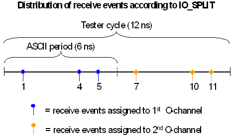
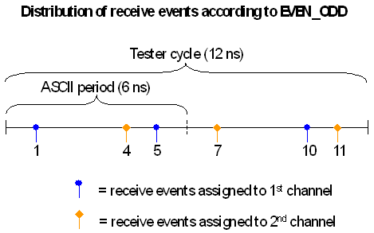
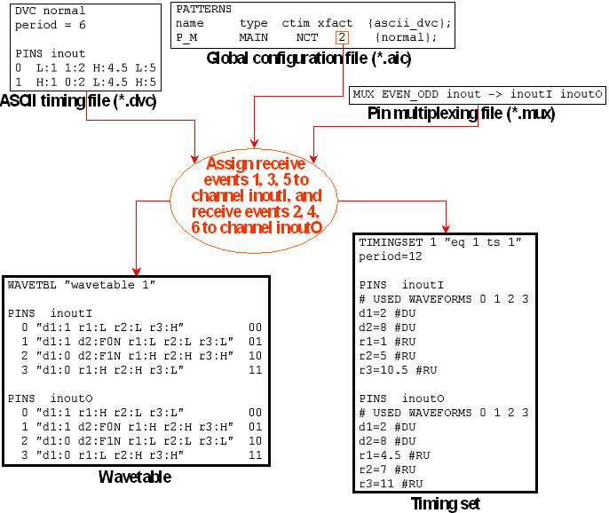

The Standard Format of the Pin Multiplexing File
The pin multiplexing file consists of one or more statements of the following form:
MUX <distribution_algorithm> <DUT_pin> -> <list_of_channels>
The individual components of this statements have the following function:
- MUX (mandatory): This keyword introduces a mapping from a DUT pin to several channels.
- <distribution_algorithm> (mandatory): The following distribution
algorithms are available.
- IO_SPLIT: In this algorithm, all drive events for the DUT pin are
executed on the first of the specified channels that is configured as an input or IO channel.
If you want to separate the drive actions and the receive actions completely, configure the
first channel as an input channel, and the following channels as output channels. The receive
events are distributed blockwise between the output and IO channels (a window open and
its corresponding window close actions are always assigned to the same channel).
Suppose, for example, that an ASCII device cycle with period 6 contains the state character definition 1H:10:2L:4H:5, and that this ASCII device cycle is used for a pattern in x-2 mode. If the receive events are distributed among two output channels, then they would divided as follows:

- (IO_SPLIT_L|IO_SPLIT_Z|IO_SPLIT_H): The only difference between these algorithms and IO_SPLIT is that a drive action is inserted as a termination value(L or Z or H) at the first edge of every waveform.
- EVEN_ODD: For this algorithm, which is intended for x-mode factors
> 1, all the associated channels must be configured as IO channels. All drive events for
the DUT pin are executed on all channels. The receive events are distributed
alternately between the channels (but a window open and its corresponding window close
actions are always assigned to the same channel).
Suppose, for example, that an ASCII device cycle with period 6 contains the state character definition 1H:10:2L:4H:5, and that this ASCII device cycle is used for a pattern in x-2 mode. If the DUT pin is mapped to two channels, the receive events would be distributed as follows:

- IO_SPLIT: In this algorithm, all drive events for the DUT pin are
executed on the first of the specified channels that is configured as an input or IO channel.
If you want to separate the drive actions and the receive actions completely, configure the
first channel as an input channel, and the following channels as output channels. The receive
events are distributed blockwise between the output and IO channels (a window open and
its corresponding window close actions are always assigned to the same channel).
- <DUT_pin> (mandatory): specifies a DUT pin.
- <list_of_channels> (mandatory): specifies the channels among which the compare actions for the DUT pin are to be distributed. For the EVEN_ODD algorithm, all these channels must be configured as IO channels. Up to four channels can be specified.
The following figure exemplifies the distribution by the EVEN_ODD algorithm:

The vector translation for this example is shown in Pin Multiplexing: The (muxio) Mode Qualifier.